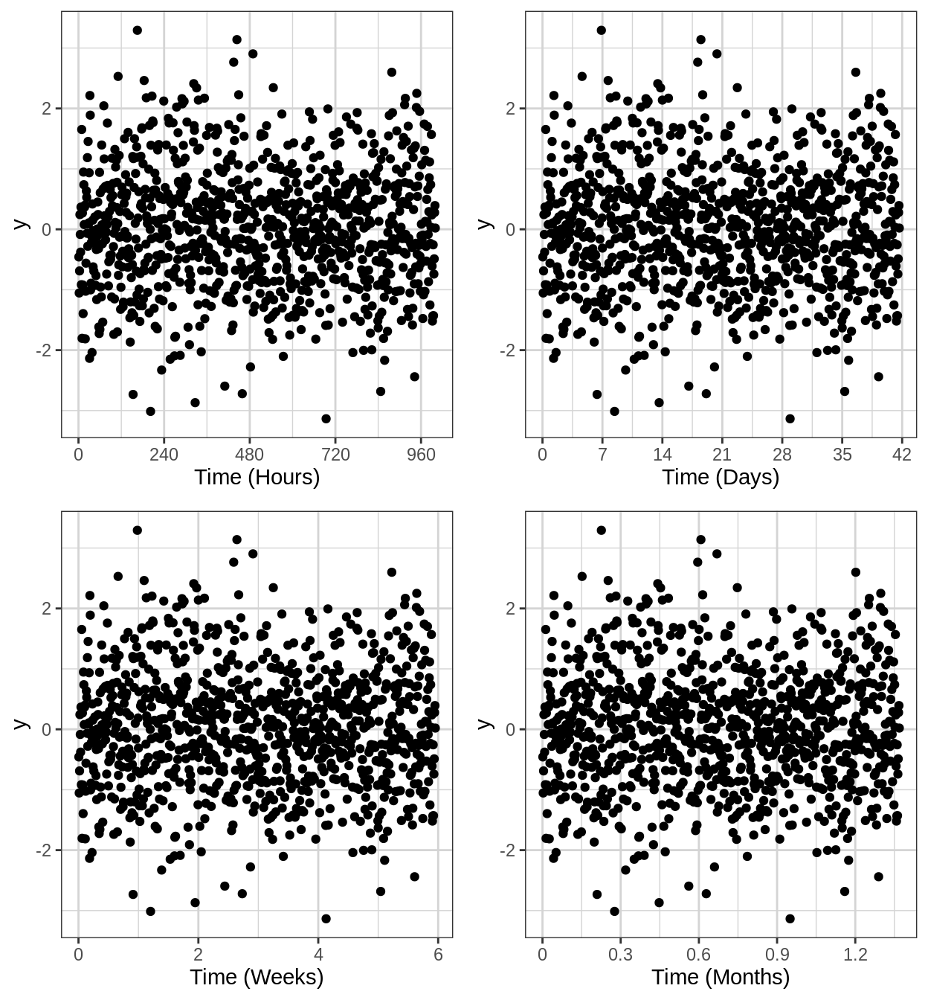
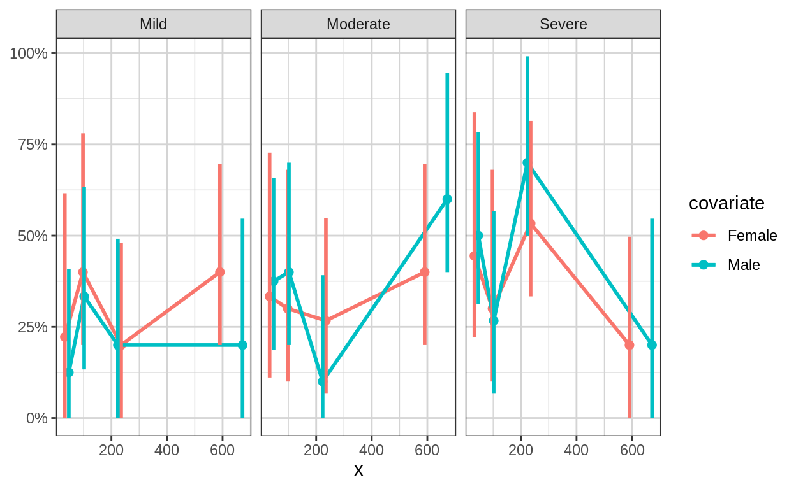
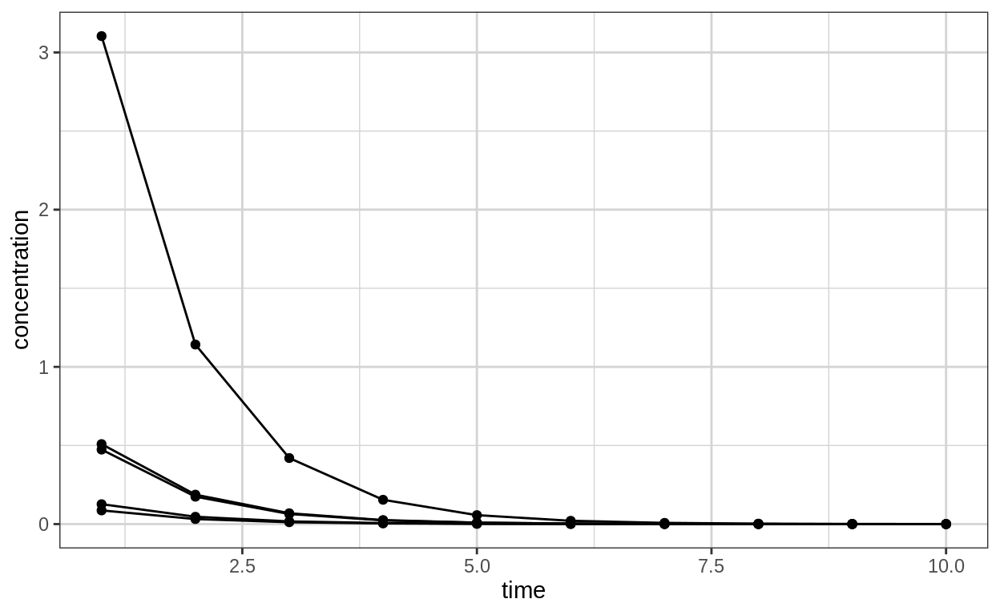
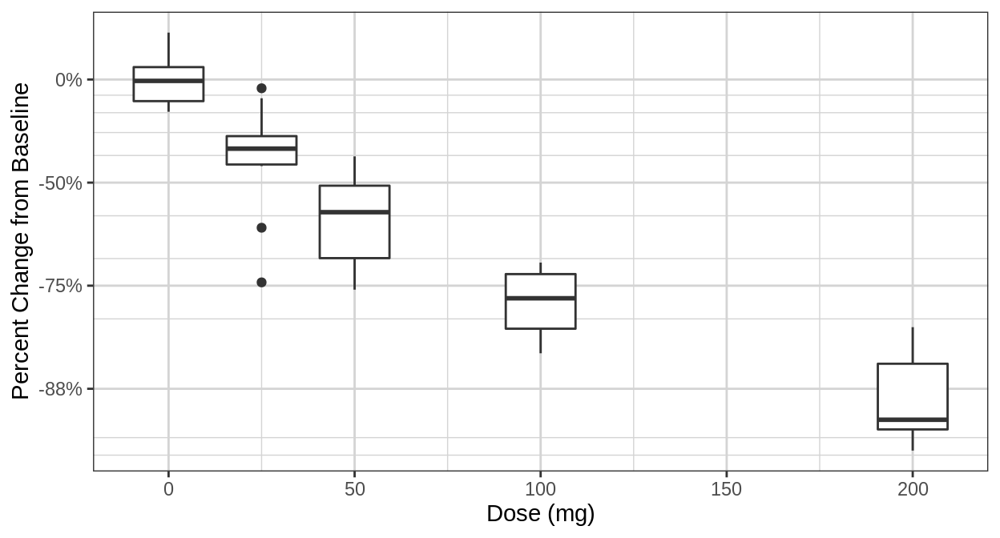
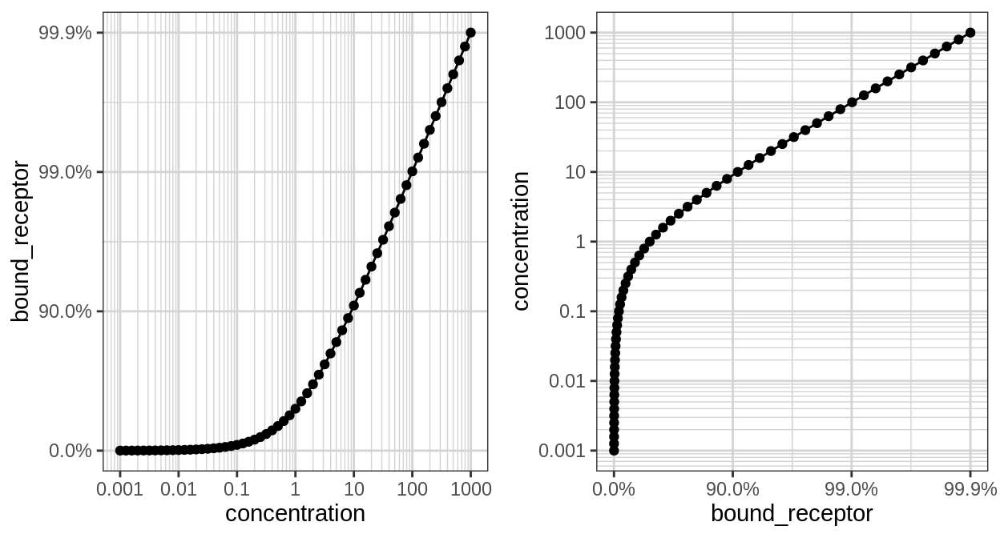
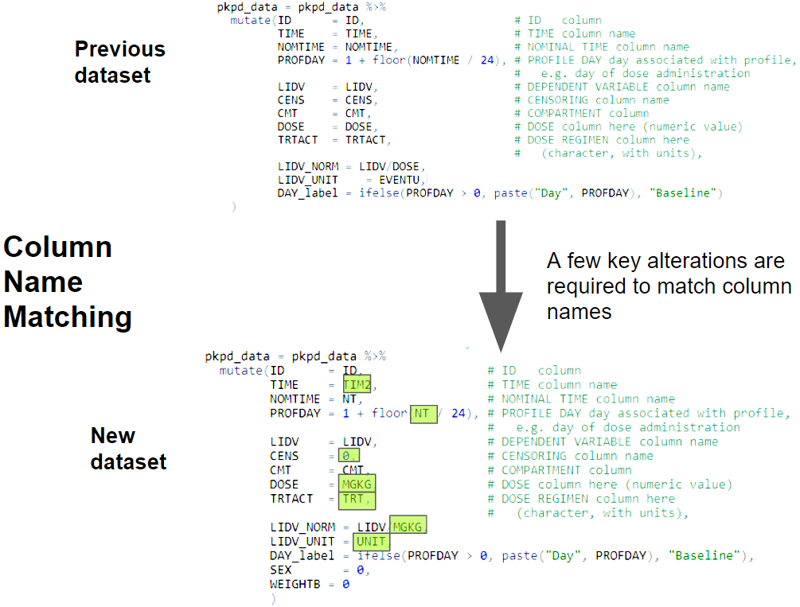

Overview

xGx/xGxr: Tools for the exploration of PKPD datasets.
Exploratory graphics provide a quick visual solution to check your data for any anomalies and give the user a simple overview of the data structure. This is particularly helpful in PKPD analysis as a step prior to making more complex models.
The open source packages xgx and xgxr are targeted specifically towards exploratory graphics of PKPD analyses, with a focus to improve efficiency, code readability, exploratory graphic consistency, and act as an educational resource for PKPD analyses.
What types of questions can we answer with exploratory graphics for PKPD?
Pharmokinetic Relevant Questions
Longitudinal trends
- How many compartments are observed within the data?
- Is the clearance nonlinear?
- (e.g. Is there a discontinuity / drop in elimination phase in log space?)
These question may be addressed in PK data by plotting the mean and confidence intervals over time, grouped by does or assigned treatment.
- Logarithmic scaling helps identify the number of compartments, linearity of elimination, and better general plot visualizations.
- Linear scaling allows better attention towards the \(C_{max}\), which can be important if there is a narrow therapeutic window and if \(C_{max}\) is important in determining safety.
An example of a PK plot used to answer these question is given in our PK - Multiple Ascending Dose template:
gg <- ggplot(data = pk_data,
aes(x = NOMTIME,
y = LIDV,
group = interaction(TRTACT_high2low, PROFDAY),
color = TRTACT_high2low))
gg <- gg + xgx_theme()
gg <- gg + xgx_geom_ci(conf_level = 0.95,
alpha = 0.5)
gg <- gg + xgx_scale_y_log10()
gg <- gg + xgx_scale_x_time_units(units_dataset = time_units_dataset,
units_plot = time_units_plot)
gg <- gg + labs(y = conc_label, color = trtact_label)
gg <- gg + xgx_annotate_status(status)
print(gg)
Dosage trends
- PK linearity - Is dose-normalized AUC or \(C_{max}\) consistent across dosages? (This provides information regarding how dosage adjustments affect response)
If the normalized concentration across doses is observed to increase with increasing dosages, this may indicate a nonlinear clearance.
Conversely, if the lowest dosage is associated with a larger and more variable normalized concentration, this may be an indication that the signal to noise ratio is low - i.e. the data is close to the lower limit of detection.
An example of the type of plot which is helpful to answer these questions is given in our PK - Single Ascending Dose template:

Pharmacodynamic Relevant Questions
Questions relevant to the pharmacodynamics of a study are dependent upon the PD data type (e.g. continuous, binary, or ordinal)
Longitudinal trends
- How quickly is a steady state reached?
Dosage trends
- Is the PD response, efficacy, or safety a function of dose?
- Is the dosage large enough to reach an asymptote?
- What is the \(E_{max}\) or \(ED_{50}\)?
An example of the type of plot which is helpful to answer these questions is given in our PD, Dose-Response - Binary Response template:

Questions about Sources of Variablility
Inter-subject variability
Between-subject variability can be easily visualized as a spaghetti plot, as we have shown in our Single Ascending Dose PK template
Single_Ascending_Dose_PK.html#explore_covariate_effects_on_pk 
Intra-subject variability
Within-subject variability is most simply viewed as a spaghetti plot, that has been faceted by the individual, such as the one shown below:

Explained vs Unexplained Variability
- Explained variability
- Between-subject:
- Traditional covariates
- Within-subject:
- Circadian rhythms, seasonal effects, food effects, disease progression
- Between-subject:
- Explained variability
- Between-subject:
- Unaccounted for covariates
- Within-subject:
- Residual error, poor absorption, other unaccounted for effects
- Between-subject:
Available Datasets Description
The examples for this tutorial will use several different datasets, which have been pre-processed for use in all of the R script examples.
These datasets are:
pkpd_data
- Non-filtered dataset. Contains all PD types (ordinal, continuous, count, binary) and PK data
pk_data
- PK only dataset
continuous_data
- Continuous PD only dataset
continuous_pk_data_wide
- Continuous PD joined with PK data
binary_data
- Binary PD only dataset
binary_pk_data_wide
- Binary PD joined with PK data
ordinal_data
- Ordinal PD only dataset
ordinal_pk_data_wide
- Ordinal PD joined with PK data
count_data
- Count PD only dataset
count_pk_data_wide
- Count PD joined with PK data
NCA
- Non Compartmental Analysis PK data
continuous_NCA
- Non Compartmental Analysis PK data combined with continuous PD data
binary_NCA
- Non Compartmental Analysis PK data combined with binary PD data
ordinal_NCA
- Non Compartmental Analysis PK data combined with ordinal PD data
count_NCA
- Non Compartmental Analysis PK data combined with count PD data
Functions
This list of functions and their descriptions is a useful starting point and overview of what is available to you through the xgxr package for making plots similar to those on the xGx website.
This will be a good reference for the next section, which will go over how to use many of these functions.
Tabulation
- xgx_check_data()
- Provides summary tables to check your data
- xgx_summarize_covariates()
- Summarizes covariate information
Plots and Themes
- xgx_theme()
- Sets the global theme to the Novartis xGx theme for plots
- xgx_plot()
- Constructs a plot with the Novartis xGx theme
Confidence Intervals and Smooths
- xgx_geom_ci()
- Plot mean & confidence intervals under different distribution assumptions (binomial, normal, lognormal, etc.)
- This function now has binning capabilities and ordinal compatibility. See new source code version here
- xgx_geom_pi()
- plot median & percentile intervals
- xgx_geom_smooth()
- Plot the mean & confidence intervals of a model which fits the data.
Aids the eye in seeing patterns in the prescence of overplotting. - This function now has ordinal compatibility via supplying
method="polr"as a parameter.
- Plot the mean & confidence intervals of a model which fits the data.
Scaling
- xgx_scale_y_log10()
- Change y axis to log10 scale, niceley spaced major & minor gridlines
- xgx_scale_x_time_units()
- Convert time units for plotting
- xgx_scale_y_reverselog10()
- Scale y axis nicely for receptor occupancy data, increases resolution around 100%
- xgx_scale_y_percentchange_log10()
- Scale y axis nicely for percent change data, increases resolution around -100%
Saving and Annotation
- xgx_annotate_status()
- Add a draft status watermark
- xgx_annotate_filenames()
- Add metadata to the bottom of a figure
- xgx_save()
- save figures with status and metadata watermarks
- xgx_save_table()
- Saves table to csv, with source metadata
Automated Template Construction
- xgx_auto_explore()
- Creates a folder in the current working directory containing an xGx template applied to a new user-provided dataset
Functions - Examples
In this first example, we will walk you through a few code snippets displaying the use of xGx functions. Our objective for this section is to introduce the new xGx user to typical plotting scripts such that they become more familiar with the xgxr functions and their syntax.
Confidence intervals
The code for confidence intervals is a bit complex and hard to remember.
Rather than copying and pasting code from sources over the internet, we provide the function xgx_stat_ci(), which calculates and plots default confidence intervals for different data types (continuous, binomial, ordinal). We also have a function for percentile intervals as well (xgx_geom_pi()).
xgx_stat_ci() allows the definition of multiple geom options in one function call, defined through a list. The default is geom = list("point","line","errorbar").
Binning continuous values on discretized x axis with xgx_stat_ci()
# PK data
gg <- ggplot(data = pk_data,
aes(x = NOMTIME,
y = LIDV,
color = factor(DOSE),
fill = factor(DOSE)))
gg <- gg + xgx_stat_ci()
print(gg)
Multinomial and other distributions
The default settings calculate the confidence interval based on the Student t Distribution (assuming normally distributed data). You can also specify “lognormal”“,”binomial"" or “multinomial”" for the distribution. The first will perform the confidence interval operation on the log-scaled data, the second uses the binomial exact confidence interval calculation from the binom package, and the third uses MultinomCI from the DescTools package.
Note: you DO NOT need to use both distribution = "lognormal" and scale_y_log10(), choose only one of these.
Lognormally distributed data
# Plotting lognormally distributed data
data <- data.frame(x = rep(c(1, 2, 3), each = 20),
y = 10^(rep(c(1, 2, 3), each = 20) + stats::rnorm(60)),
group = rep(1:3, 20))
gg <- xgx_plot(data, aes(x = x, y = y)) +
xgx_stat_ci(conf_level = 0.95, distribution = "lognormal")
print(gg)
# note: you DO NOT need to use both distribution = "lognormal" and scale_y_log10()
gg <- xgx_plot(data,aes(x = x, y = y)) +
xgx_stat_ci(conf_level = 0.95) + xgx_scale_y_log10()
print(gg)
Binomially distributed data
# plotting binomial data
data <- data.frame(x = rep(c(1, 2, 3), each = 20),
y = rbinom(60, 1, rep(c(0.2, 0.6, 0.8), each = 20)),
group = rep(1:3, 20))
gg <- xgx_plot(data, aes(x = x, y = y)) +
xgx_stat_ci(conf_level = 0.95, distribution = "binomial")
print(gg)
Multinomial data
# Example plotting the percent of subjects in a categorical covariate group by treatment.
set.seed(12345)
data = data.frame(x = 120*exp(rnorm(100,0,1)),
response = sample(c("Trt1", "Trt2", "Trt3"), 100, replace = TRUE),
covariate = factor(sample(c("White","Black","Asian","Other"), 100, replace = TRUE),
levels = c("White", "Black", "Asian", "Other")))
xgx_plot(data = data) +
xgx_stat_ci(mapping = aes(x = response, response = covariate),
distribution = "ordinal") +
xgx_stat_ci(mapping = aes(x = 1, response = covariate), geom = "hline",
distribution = "ordinal") +
scale_y_continuous(labels = scales::percent_format()) +
facet_wrap(~covariate) +
xlab("Treatment group") + ylab("Percent of subjects by category")## In xgx_stat_ci:
## The following aesthetics are identical to response: PANEL
## These will be used for differentiating response groups in the resulting plot.
## In xgx_stat_ci:
## The following aesthetics are identical to response: PANEL
## These will be used for differentiating response groups in the resulting plot.
## In xgx_stat_ci:
## The following aesthetics are identical to response: PANEL
## These will be used for differentiating response groups in the resulting plot.
## In xgx_stat_ci:
## The following aesthetics are identical to response: PANEL
## These will be used for differentiating response groups in the resulting plot.## Warning: Unknown or uninitialised column: 'width'.## geom_path: Each group consists of only one observation. Do you need to
## adjust the group aesthetic?## geom_path: Each group consists of only one observation. Do you need to
## adjust the group aesthetic?
## geom_path: Each group consists of only one observation. Do you need to
## adjust the group aesthetic?
## geom_path: Each group consists of only one observation. Do you need to
## adjust the group aesthetic?
Binning ordinal values on non-discretized x axis with xgx_stat_ci()
# Example of binned x values by quantile
gg <- xgx_plot(ordinal_pk_data_wide,
aes(x = CONC,
response = ORDINAL_LEVELS,
color = ORDINAL_LEVELS))
gg <- gg + xgx_stat_ci(bins = 6,
distribution = "ordinal")
print(gg)
Binning with custom (non-quantile) breaks parameter
# Example of binned x values by quantile
gg <- xgx_plot(ordinal_pk_data_wide,
aes(x = CONC,
response = ORDINAL_LEVELS,
color = ORDINAL_LEVELS))
gg <- gg + xgx_stat_ci(breaks = c(0.1, 0.2, 0.5, 1, 3),
distribution = "ordinal")
print(gg)
Nonlinear smoothing (e.g. Emax)
The current ggplot2::geom_smooth does not allow for plotting confidence bands for method = “nls”, as ggplot2 does not supply a predictdf for an object of class nls, which geom_smooth silently calls to calculate the ymin and ymax for the confidence bands. The xgxr package includes a definition of predictdf.nls, allowing for confidence bands for method = “nls”. xgxr also includes an Emax smooth function called xgx_geom_smooth_emax which utilizes the “nlsLM” method, and silently calls the predictdf.nls defined by xgxr.
set.seed(123456)
Nsubj <- 10
Doses <- c(0, 25, 50, 100, 200)
Ntot <- Nsubj*length(Doses)
times <- c(0,14,30,60,90)
dat1 <- data.frame(ID = 1:(Ntot),
DOSE = rep(Doses, Nsubj),
E0 = 50*rlnorm(Ntot, 0, 0.3),
Emax = 100*rlnorm(Ntot, 0, 0.3),
ED50 = 50*rlnorm(Ntot, 0, 0.3)) %>%
dplyr::mutate(Response = (E0 + Emax*DOSE/(DOSE + ED50))*rlnorm(Ntot, 0, 0.3) ) %>%
merge(data.frame(ID = rep(1:(Ntot), each = length(times)), Time = times), by = "ID")
gg <- ggplot(data = dat1, aes(x = DOSE, y = Response))
gg <- gg + geom_point()
gggg + geom_smooth(method = "nlsLM",
formula = y ~ E0 + Emax*x/(ED50 + x),
method.args = list(start = list(E0 = 1, ED50 = 1, Emax = 1),
lower = c(-Inf, 0, -Inf)))
gg + xgx_geom_smooth_emax()
gg +
xgx_geom_smooth_emax(geom = "ribbon", color = "black", fill = NA, linetype = "dashed") +
xgx_geom_smooth_emax(geom = "line", color = "red")
Nice log scale
This version of the log scale function shows the tick marks between the major breaks (i.e. at 1, 2, 3, … 10, instead of just 1 and 10). It also uses \[10^x\] notation when the labels are base 10 and are very small or very large (<.001 or >9999)
df <- data.frame(x = c(0, stats::rlnorm(1000, 0, 1)),
y = c(0, stats::rlnorm(1000, 0, 3)))
xgx_plot(data = df, aes(x = x, y = y)) +
geom_point() +
xgx_scale_x_log10() +
xgx_scale_y_log10()
Reverse log transform
This transform is useful for plotting data on a percentage scale that can approach 100% (such as receptor occupancy data).
conc <- 10^(seq(-3, 3, by = 0.1))
ec50 <- 1
data <- data.frame(concentration = conc,
bound_receptor = 1 * conc / (conc + ec50))
gy <- xgx_plot(data, aes(x = concentration, y = bound_receptor)) +
geom_point() +
geom_line() +
xgx_scale_x_log10() +
xgx_scale_y_reverselog10()
gx <- xgx_plot(data, aes(x = bound_receptor, y = concentration)) +
geom_point() +
geom_line() +
xgx_scale_y_log10() +
xgx_scale_x_reverselog10()
gridExtra::grid.arrange(gy, gx, nrow = 1)Nice scale for percent change data
This transform is useful for plotting percent change from baseline data. Percent change data can range from -100% to +Inf%, and depending on the range of the data, a linear scale can lose the desired resolution. This transform plots percent change data on a scale of log10(PCHG + 100%), similar to a log scale of ratio to baseline.
Nsubj <- 10
Doses <- c(0, 25, 50, 100, 200)
Ntot <- Nsubj*length(Doses)
times <- c(0,14,30,60,90)
dat1 <- data.frame(ID = 1:(Ntot),
DOSE = rep(Doses, Nsubj),
PD0 = rlnorm(Ntot, log(100), 1),
Kout = exp(rnorm(Ntot,-2, 0.3)),
Imax = 1,
ED50 = 25) %>%
dplyr::mutate(PDSS = PD0*(1 - Imax*DOSE/(DOSE + ED50))*exp(rnorm(Ntot, 0.05, 0.3)) ) %>%
merge(data.frame(ID = rep(1:(Ntot), each = length(times)), Time = times), by = "ID") %>%
dplyr::mutate(PD = ((PD0 - PDSS)*(exp(-Kout*Time)) + PDSS),
PCHG = (PD - PD0)/PD0)
ggplot2::ggplot(dat1 %>% subset(Time == 90),
ggplot2::aes(x = DOSE, y = PCHG, group = DOSE)) +
ggplot2::geom_boxplot() +
xgx_theme() +
xgx_scale_y_percentchangelog10() +
ylab("Percent Change from Baseline") +
xlab("Dose (mg)")
ggplot2::ggplot(dat1,
ggplot2::aes(x = Time, y = PCHG, group = ID, color = factor(DOSE))) +
ggplot2::geom_line() +
xgx_theme() +
xgx_scale_y_percentchangelog10() +
guides(color = guide_legend(title = "Dose (mg)")) +
ylab("Percent Change from Baseline")
dat2 <- data.frame(ID = 1:(Ntot),
DOSE = rep(Doses, Nsubj),
PD0 = rlnorm(Ntot, log(100), 1),
Kout = exp(rnorm(Ntot,-2, 0.3)),
Emax = 50*rlnorm(Ntot, 0, 0.3),
ED50 = 300) %>%
dplyr::mutate(PDSS = PD0*(1 + Emax*DOSE/(DOSE + ED50))*exp(rnorm(Ntot, -1, 0.3)) ) %>%
merge(data.frame(ID = rep(1:(Ntot), each = length(times)), Time = times), by = "ID") %>%
dplyr::mutate(PD = ((PD0 - PDSS)*(exp(-Kout*Time)) + PDSS),
PCHG = (PD - PD0)/PD0)
ggplot2::ggplot(dat2, ggplot2::aes(x = DOSE, y = PCHG, group = DOSE)) +
ggplot2::geom_boxplot() +
xgx_theme() +
xgx_scale_y_percentchangelog10() +
ylab("Percent Change from Baseline") +
xlab("Dose (mg)")
ggplot2::ggplot(dat2,
ggplot2::aes(x = Time, y = PCHG, group = ID, color = factor(DOSE))) +
ggplot2::geom_line() +
xgx_theme() +
xgx_scale_y_percentchangelog10() +
guides(color = guide_legend(title = "Dose (mg)")) +
ylab("Percent Change from Baseline")
Scaling x-axis as a time scale
For time, it’s often good for the x ticks to be spaced in a particular way. For instance, for hours, subdividing in increments by 24, 12, 6, and 3 hours can make more sense than by 10 or 100. Similarly for days, increments of 7 or 28 days are preferred over 5 or 10 days. xgx_scale_x_time_units allows for this, where it is the input and output units.
data <- data.frame(x = 1:1000, y = stats::rnorm(1000))
g <- xgx_plot(data = data, aes(x = x, y = y)) +
geom_point()
g1 <- g + xgx_scale_x_time_units(units_dataset = "hours", units_plot = "hours")
g2 <- g + xgx_scale_x_time_units(units_dataset = "hours", units_plot = "days")
g3 <- g + xgx_scale_x_time_units(units_dataset = "hours", units_plot = "weeks")
g4 <- g + xgx_scale_x_time_units(units_dataset = "hours", units_plot = "months")
gridExtra::grid.arrange(g1, g2, g3, g4, nrow = 2)
Functions - Exercises
Objective: Test the new xGx user’s understanding of xgxr functions
Now that we have seen several examples of the xGx functions and how to use them, let’s test our abilities and understanding of these functions.
In these exercises, we will walk you through a few minimal, reproducible example (reprex)-like code snippets displaying the use of xGx functions.
Summary Statistic Plot Functions
Given the code snippet below, answer the following questions:
# Setup
gg <- ggplot(data = pk_data, aes(x = NOMTIME,
y = LIDV,
group = DOSE,
color = TRTACT_high2low)) + theme_bw()
# Relevant to Question
####
gg <- gg + stat_summary(geom = "errorbar",
# width = 0.5,
size = 1,
fun.data = function(y){y <- stats::na.omit(y)
data.frame(y = mean(y),
ymin = mean(y) - qt(0.975, length(y)) * sqrt(stats::var(y)/length(y)),
ymax = mean(y) + qt(0.975, length(y)) * sqrt(stats::var(y)/length(y)))})
gg <- gg + stat_summary(geom = "point", size = 2, fun.y = mean)
gg <- gg + stat_summary(geom = "line", size = 1, fun.y = mean)
####Similarly, what xGx function can replace the following ggplot2 code?
gg <- gg + scale_y_log10(minor_breaks = (rep(seq(1,9), 21)) * 10^(rep(seq(-10,10),each=9)))Finally, can this code be replaced with an xGx function as well? - Which one?
gg <- gg + scale_x_continuous(breaks = seq(0,max(my.data$TIME/24)+1, 1))Now let’s try to produce a plot using these functions we just discussed.
# Setup
gg <- ggplot(data = pk_data, aes(x = NOMTIME,
y = LIDV,
group = DOSE,
color = factor(DOSE))) + theme_bw()
# What goes here?
print(gg)# Use the plotting functions from the previous questions# Setup
gg <- xgx_plot(data = pk_data, aes(x = NOMTIME,
y = LIDV,
group = DOSE,
color = factor(DOSE)))
gg <- gg + xgx_geom_ci(conf_level = 0.95)
gg <- gg + xgx_scale_x_time_units()
gg <- gg + xgx_scale_y_log10()
print(gg)Can you add an Emax model fit to this data as well?
# Setup
gg <- ggplot(data = continuous_pk_data_wide, aes(x = NOMTIME,
y = PD,
group = DOSE,
color = factor(DOSE))) + theme_bw()
gg <- gg + xgx_geom_ci(conf_level = 0.95)
# What goes here?
print(gg)# Use the plotting functions from the previous questions
# (xgx_geom_smooth_emax)# Setup
# Setup
gg <- ggplot(data = continuous_pk_data_wide, aes(x = NOMTIME,
y = PD,
group = DOSE,
color = factor(DOSE))) + theme_bw()
gg <- gg + xgx_geom_ci(conf_level = 0.95)
gg <- gg + xgx_geom_smooth_emax()
print(gg)Templates
Dose-PK/Exposure
Dose-PD/Efficacy/Safety
Template - Example
Overview
In this example, we will go through the steps of how to alter the xGx R-markdown templates provided within the xGx github in order to adhere to a new dataset of interest.
Finding the desired xGx template
We will first go to the xGx website, find the desired xGx template from browsing the differnt webpages provided there, and then find the corresponding xGx template on the github website.
Here, we have chosen to view the data to answer questions about the continuous PD responses. Specifically, we will be following the PK/PD, Exposure-Response - Continuous Rmd template, for which the Rmd script can be downloaded here.
After that, we need to download the R-markdown file, and alter it’s code such that it will analyze our dataset.
Downloading from Github
There are a few different ways in which you can download the data, so choose whichever method is most convenient for you. A few options are listed here:
- xGx website \(\rightarrow\) github (via browswer)
- wget / curl (linux command line)
- download.file(url,file_path) (R console)
Editing the template
Now after downloading our R-markdown script using the command download.file("https://raw.githubusercontent.com/Novartis/xgx/master/Rmarkdown/Multiple_Ascending_Dose_PKPD_continuous.Rmd", "MAD_PKPD_continuous_mydata.Rmd"), we edit the file by replacing the column names and file paths with our dataset’s file path and column names relevant to our dataset.
Example Rmd file snippet after editing
pkpd_data <- read.csv("https://raw.githubusercontent.com/Novartis/xgxr/chase/data_create/raw/nonlinear_pkpd.csv")
DOSE_CMT = 1
PK_CMT = 5
PD_CMT = 4
SS_PROFDAY = 6 # steady state prof day
PD_PROFDAYS <- c(0, 2, 4, 6)
TAU = 24 # time between doses, units should match units of TIME, e.g. 24 for QD, 12 for BID, 7*24 for Q1W (when units of TIME are h)
#ensure dataset has all the necessary columns
pkpd_data = pkpd_data %>%
mutate(ID = ID, # ID column
TIME = TIM2, # TIME column name
NOMTIME = NT, # NOMINAL TIME column name
PROFDAY = 1 + floor(NT / 24), # PROFILE DAY day associated with profile,
# e.g. day of dose administration
LIDV = LIDV, # DEPENDENT VARIABLE column name
CENS = 0, # CENSORING column name
CMT = CMT, # COMPARTMENT column
DOSE = MGKG, # DOSE column here (numeric value)
TRTACT = TRT, # DOSE REGIMEN column here
# (character, with units),
LIDV_NORM = LIDV/MGKG,
LIDV_UNIT = UNIT,
DAY_label = ifelse(PROFDAY > 0, paste("Day", PROFDAY), "Baseline"),
SEX = 0,
WEIGHTB = 0
)
#create a factor for the treatment variable for plotting
pkpd_data = pkpd_data %>%
arrange(DOSE) %>%
mutate(TRTACT_low2high = factor(TRTACT, levels = unique(TRTACT)),
TRTACT_high2low = factor(TRTACT, levels = rev(unique(TRTACT))))You may notice that some of the columns have identical mappings, while others do not. Here, we have kept the same structure that is used within the xGx R-markdown script to indicate the column name mappings. However, our new dataset has column names that are different than the dataset from the dataset provided in the R-markdown on our xGx website
This figure describes what we have done, and the same process can be applied to any new dataset for which you may be interested.

Templates - AutoExplore Example
We have seen previously how to apply the previously constructed xGx Rmd templates to our own data.
In this example, we will learn how to automatically construct one of the R-markdown templates for our data using the xgx_autoexplore() function.
As we will see, the xgx_autoexplore() function makes process of analyzing our data take far fewer manual steps and is much more simple.
Defining Parameters
We first define the parameters according to our desired analysis. In order to reproduce the output from Section “Example 2 - Altering an xGx Template to New Data (Multiple Dose Continuous PKPD)”, we will choose our parameters to match this analysis template:
# Include the new xgx_autoexplore function in the environment
devtools::source_url("https://raw.githubusercontent.com/Novartis/xgxr/chase/R/xgx_auto_explore.R", echo=FALSE)## SHA-1 hash of file is 59331fd3d89b0d49f0b99dc12469962c2c84a992author_name = "Your Name Here"
# Do you want text explaining the figures?
show_explanation = FALSE
# Your path to the data goes here
data_path <- "https://raw.githubusercontent.com/Novartis/xgxr/master/data_create/raw/nonlinear_pkpd.csv"
# Change your column names (left) to the column names that
# have been standardized in the template (left)
mapping <- list(
"TIME" = "TIM2",
"NOMTIME" = "NT",
"EVID" = 0,
"CENS" = 0,
"DOSE" = "MGKG",
"TRTACT" = "TRT",
"LIDV_NORM" = "LIDV/MGKG",
"LIDV_UNIT" = "UNIT",
"PROFDAY" = 1,
"SEX" = 0,
"WEIGHTB" = 0)
# SAD PK Parameters specific to your dataset
pk_cmt = 5 # Pk Concentration
pd_cmt = 4 # PD Continuous
pd_data_type = "continuous"
dose_cmt = 1
steady_state_day = c(0, 6)
time_between_doses = 24
multiple_dosing = TRUENotice that we have defined the pk_cmt and pd_cmt here, as well as the multiple_dosing parameter as TRUE. This will tell the function to use the “Multiple Ascending Dose PKPD” template type.
In order to choose the “Continuous” template for MAD PKPD, we also define pd_data_type as "continuous".
Similar to how we altered the columns that are specific to our dataset, we have created a mapping from the columns of our dataset to the standardized xGx template columns.
Output of xgx_autoexplore()
We may then provide these parameters to the xgx_autoexplore() function, after which a folder will be created in the current working directory - “xgx_autoexplore_output”.
xgx_auto_explore(data_path = data_path,
mapping = mapping,
author_name = author_name,
pk_cmt = pk_cmt,
pd_cmt = pd_cmt,
dose_cmt = dose_cmt,
steady_state_day = steady_state_day,
time_between_doses = time_between_doses,
multiple_dosing = multiple_dosing,
pd_data_type = pd_data_type,
show_explanation = show_explanation)## Error in subset.default(., token == "expr"): object 'token' not found# Check that the correct Rmd template is retrieved
knitr::include_url("https://opensource.nibr.com/xgx/Multiple_Ascending_Dose_PKPD_continuous.html",
#"xgx_autoexplore_output/nonlinear_pkpd/Multiple_Ascending_Dose_PKPD_continuous/Multiple_Ascending_Dose_PKPD_continuous.html",
height = "600px")# knitr::include_graphics(".pdf")
# htmltools::includeHTMLThe main xgx_autoexplore directory (“xgx_autoexplore_output”) will have a hierarchical structure, with each new dataset having it’s own directory with the main xgx_autoexplore directory. Furthermore, within each dataset directory, each template applied to this dataset will get it’s own directory as well.
Templates - AutoExplore Exercise
Given the code example from the examples before, let’s go through some exercises to learn about how to alter this code to produce an xGx rmd template for SAD PK on this dataset.
Code from Templates - AutoExplore Example Section
# Include the new xgx_autoexplore function in the environment
devtools::source_url("https://raw.githubusercontent.com/Novartis/xgxr/chase/R/xgx_auto_explore.R", echo=FALSE)
author_name = "Your Name Here"
# Do you want text explaining the figures?
show_explanation = FALSE
# Your path to the data goes here
data_path <- "https://raw.githubusercontent.com/Novartis/xgxr/master/data_create/raw/nonlinear_pkpd.csv"
# Change your column names (left) to the column names that
# have been standardized in the template (left)
mapping <- list(
"TIME" = "TIM2",
"NOMTIME" = "NT",
"EVID" = 0,
"CENS" = 0,
"DOSE" = "MGKG",
"TRTACT" = "TRT",
"LIDV_NORM" = "LIDV/MGKG",
"LIDV_UNIT" = "UNIT",
"PROFDAY" = 1,
"SEX" = 0,
"WEIGHTB" = 0)
# SAD PK Parameters specific to your dataset
pk_cmt = 5 # Pk Concentration
pd_cmt = 4 # PD Continuous
pd_data_type = "continuous"
dose_cmt = 1
steady_state_day = c(0, 6)
time_between_doses = 24
multiple_dosing = TRUE
xgx_auto_explore(data_path = data_path,
mapping = mapping,
author_name = author_name,
pk_cmt = pk_cmt,
pd_cmt = pd_cmt,
dose_cmt = dose_cmt,
steady_state_day = steady_state_day,
time_between_doses = time_between_doses,
multiple_dosing = multiple_dosing,
pd_data_type = pd_data_type,
show_explanation = show_explanation)Performing a Single Ascending Dose Pharmacokinetics Analysis
Probability of Severe Response
Let’s say that we have a dataset in our home directory, ~/my_pkpd_dataset.csv, which contains categorical responses for an individual’s severity of response for each time point, drug concentration, and treatment dosage. The PD ordinal response is held within compartment = 3, while PK data is within compartment = 1 for this dataset. The compartment column name is “COMPNT”.